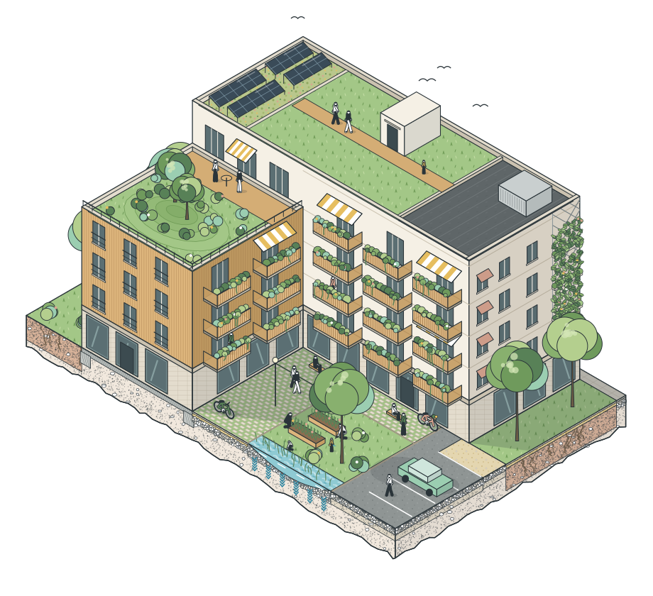
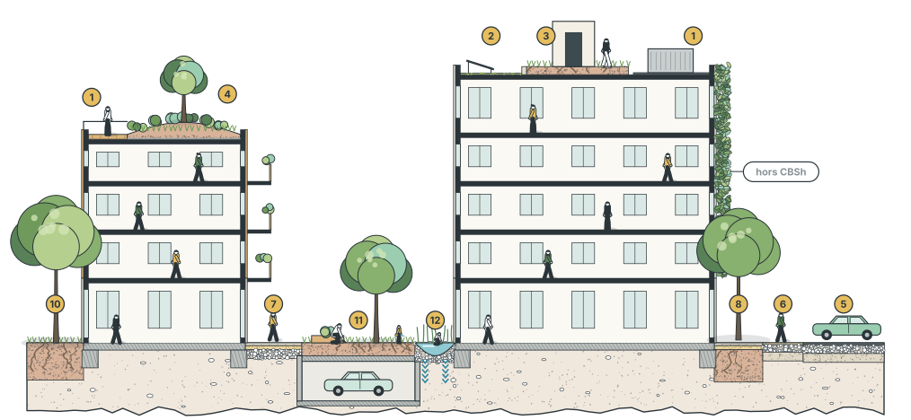
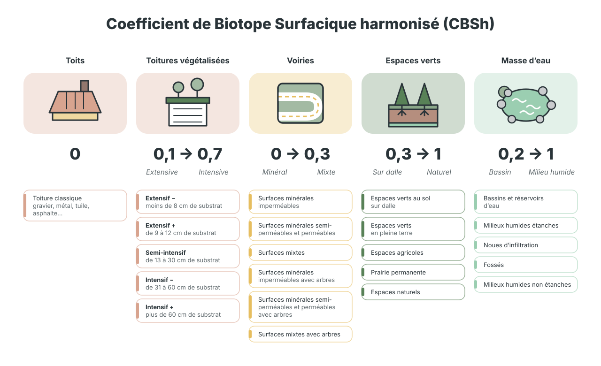

CBSh
m²
CBSh
m²
Gain B / A
CBSh
m²
Isométrie à l'échelle · coupe du sol par type de surface

Cliquer sur une zone de l'illustration ou sur une étiquette pour saisir ses surfaces · une étiquette par ligne du tableau
Largeur des blocs ∝ m². La barre « éco » = Σ surface × coef. : sa longueur rapportée à la parcelle est le CBSh.
Une tranche du projet · n° = ligne du tableau

Coefficient de Biotope Surfacique harmonisé
Le CBSh est un indicateur de biodiversité in situ retenu par le GT 7 Biodiversité dans le cadre de Cap 2030. Compris entre 0 et 1, il permet de comparer la capacité d’accueil de la biodiversité d’un site avant et après projet. Il prend en compte les surfaces végétalisées selon l’épaisseur de leur substrat et la combinaison de strates qu’elles portent.
Pourquoi « harmonisé » ? Le coefficient de biotope est simple, très diffusé et facile à valoriser, mais il en existe de nombreuses variantes, chacune répondant à des problématiques propres. Le CBSh cherche à faire consensus plutôt que de laisser cohabiter une dizaine de calculs différents.
Chaque surface est multipliée par le coefficient de sa typologie (de 0 à 1). On additionne le tout, puis on divise par la surface de la parcelle.
CBSh = Σ (surface × coefficient) ÷ surface de la parcelle
Par exemple, 410 m² « écologiques » sur une parcelle de 1 000 m² donnent un CBSh de 0,41. Les surfaces saisies sont des projections horizontales (sol et toitures) : les façades ne comptent pas. Leur somme ne peut pas dépasser la surface de la parcelle. Si une partie de la parcelle n’est pas saisie, indiquez la surface de la parcelle dans l’onglet « Saisie et détails » : la part non saisie compte pour 0. Sans valeur, l’outil retient la somme des surfaces saisies.
Classique, extensive, semi-intensive, intensive
Par défaut : 0,1 (extensive sédum)
Imperméable, semi-perméable, mixte, avec arbres
Par défaut : 0 (imperméable)
Sur dalle, pleine terre, agricole, naturel
Par défaut : 0,7 (pleine terre)
Bassin, milieu humide, noue d’infiltration, fossé
Par défaut : 0,2 (bassin)
La nomenclature compte aujourd’hui 41 typologies, assez pour décrire la diversité des paysages urbains.

Vous comparez deux scénarios d’un même projet, A et B ; un clic sur le nom d’un scénario, dans sa carte, permet de le renommer. Cliquez sur une zone du plan ou sur une étiquette pour saisir ses surfaces, ou utilisez l’onglet « Saisie et détails » pour le tableau complet. Une ligne vide dans les deux scénarios peut y être supprimée (✕). Le gain entre A et B s’affiche en points de CBSh.
Vos saisies sont enregistrées automatiquement dans ce navigateur : elles sont retrouvées au rechargement, mais ne passent pas d’un appareil à un autre. Le menu « Projet » permet d’exporter le projet (.json), de le réimporter ou de revenir à l’exemple ; le bouton « Exporter .csv » produit un tableau lisible dans Excel.
Livrable de la phase 1 du GT 7 Biodiversité (novembre 2024), avec la présentation détaillée du CBSh, ses choix de construction et un tutoriel de l’outil officiel.
Le CBSh est un indicateur élaboré au sein du GT 7 – Biodiversité, piloté par le CSTB, dans le cadre du projet Cap 2030 (version de septembre 2024).